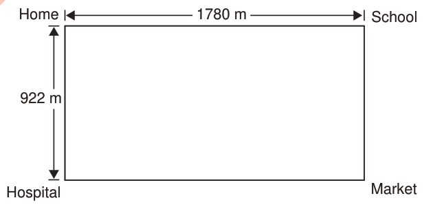

Exercise 4
1.
A teacher has a square shaped garden.If the garden has length of 20 metres, find its perimeter.
2.
A triangular field has sides measuring 15 metres, 20 metres and 25 metres.Find the perimeter of the field.
3.
A square table has a length of 8 metres.Find its perimeter.
4.
Juma walked from his home to school.After school, he walked to the market, from the market to the hospital, and back home as shown in the following figure:

HomeSchoolHospitalMarket1780 m922 m
Find the total distance walked by Juma.